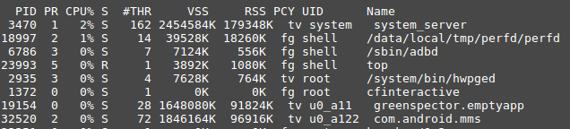
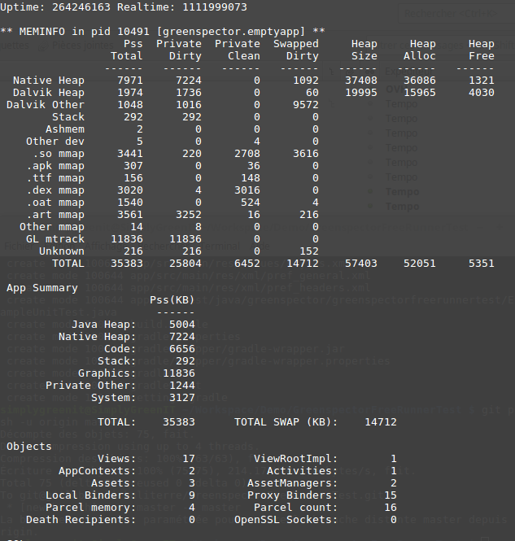

Because we care about your applications efficiency, we introduce you to the ultimate metric guide to manage your application’s memory on Android devices.
Memory syllabus
Pages: Blocks used to retrieve data from disk to memory. Main part of virtual memory management. Most of the time page size is 4kb.
Private / Shared memory: Private memory is composed of pages that are only used by the process. Shared memory is composed of pages which are used by other processes. It is possible that a page goes from private to shared if another process references this page.
Clean / Dirty memory: Dirty pages are pages that are written out to the disk. Hence, clean pages are pages that have been read.
VSS (Virtual Set Size): It is the total number of pages accessible by a process. It includes both shared and private pages, but also other memory space like malloc. Not used.
RSS (Resident Set Size): Total of all shared libraries. No information on how many processes use the page. Thus, not a very useful information (PSS is more important).
Pss (proportional set size): It is the count of pages a process has in memory, in which private pages are added to shared pages and divided by the number of processed that share it. If a process has 2 private pages and 6 private pages used by 2 others processes, the pss in number of pages is 2+6/3 so 4.
Uss (Unique set size): The number of unique pages associated to a process, meaning private pages! Generaly VSS > RSS > PSS > USS
Java / native memory: Java memory is the memory managed by the Android System (Dalvik or ART). Typically your Java or Kotlin objects! Native memory is usually generated object. Even if you have no C/C++ application, the Android framework uses some native method.
ZRam: Android has no swap partition, Zram is RAM but compression is used to store unnecessary data to RAM. Swapped dirty in meminfo seems to be equivalent.
Stack / heap: Heap is the object memory space. Stack is for local variable. As a result, objects are created in Heap. Every thread has a stack space.
Allocated Heap Size : Android is a multitasking system, in order to save memory for other processes, it allocates a memory size in the overall memory. This size depends on the smartphone. If your application needs more memory, you will have a typical « out of memory” error.
MMAP: System calls that map file to memory. In Android you have mmap for each type of file (Dex, APK, ART…). It can be named « Code » in some tools.
Graphics Buffer: Memory used to store graphical objects.
User/Kernal memory: Process runs in user space. Kernel space is dedicated to Android system calls.
Memory organization
Android Memory is organized with virtual addresses. Mapping is the following (Ascending address):
- User Space
- Data space (text, data, instructions…)
- Heap
- libs (Shared libraries, .jar…)
- Stack
- Kernel Space
The memory used by your application is in the user space (mostly in heap and stack).
Tools
Android system parameter: The information in the UI of Android gives two information : maximum consumption and average information (during 3 hours). The average is complicated to analyze and the maximum consumption is a first indication for the user.
Top: RSS and VSS are used, as a consequence information of Top are not so meaningful.

Memory Profiler in Android Studio (>3.0): Private memory only is measured and is divided in domains:
- Native / Java
- Code
- Graphics Buffer
Android Monitor in Android Studio (<3.0): Private memory only is measured. Less domains are measured than in Android Memory > 3
Dumpsys: Dumpsys measure the PSS memory (both private and shared) and also SWAP dirty

Android MemInfo API: PSS memory is used (private and shared)
/proc/meminfo: Global memory of the platform, no information about your process
Which metrics must be used?
USS/private memory: This memory is dedicated to your process. Thus it is interesting to analyze precisely the object dedicated to your application. Also, you can detect a memory leak, for example, if you kill your process, the dedicated memory must be zero. Nonetheless, your application used libraries and other shared codes so you won’t see memory that can be shared with other processes.
PSS/Private and shared memory: It is more complicated to analyze this memory because it integrates the memory of other processes (with a correction factor). However, during your measurement, if you close other apps running in the background, this impact will be minimized.
VSS/RSS: Too many memory pages taken into account so this metric is not interesting to analyze.
How to test memory?
Static: You just have to run your application and launch the memory tools. It permits to get an overview of the memory consumption of your application. You can use this technique to reduce the overall memory used: code, java heap…
Long Running: You let the tools run and you observe the evolution of memory. That way, you can identify a potential memory leak: the memory can increase regularly. If there is a garbage collector which reduces regularly the memory down to the initial value it is OK, if not, there is a leak.
Switching between activities: You can go between pages and see if the memory is released every time. You can do that with monkey tests.
Rotating screen: If you rotate your screen, the activity of your application will potentially create a memory leak.
Put application in the background: If your application is in the background, some memory will be released (for example graphics). You can release more memory (object, library…).
How to reduce memory?
Optimize Image: Images are major causes of memory consumption. You can use Glide library to help you manage it or optimize the management with Android API
Release Memory when Android asks for more memory : As the system is low on memory, an event is sent to all applications to release memory. Override onTrimMemory() to release memory in this case
Use specific containers: Generic collections like hashmap are not dedicated to Android, some containers are more adapted, such as SparseArray
Reduce the size of your APK: The size of your apk (especially ressources and libraries) could increase the memory consumption
Reduce the number of threads: Android provides services to make small tasks and to avoid memory consumption, like AsyncTask
Favor static inner classes over non-static: Non-static inner classes create extraneous references to out activity. This is a cause of memory leak. You should choose static.
FAQ
How to know the heap limit size?: The heap limit size of Android depends on the device (15Mb to several hundreds). To know the limit size you can use the getMemoryClass() API of ActivityManager service.
Memory information is not the same between different tools. Why ?: Tools could be using different system APIs or could not take into account the same data (for example not to take MMAP). Generally speaking : Android monitor < Android Profiler in Android Studio < dumpsys < System Meminfo api < top info and VSS > RSS > PSS > USS
Will Android release my process memory during the background mode?: When the user changes the app, the system caches the app in a least-recently used (LRU) cache. As the system runs on low memory, it will kill consuming apps. If your app consumes less memory, it has some chances not to be killed (or at least after the more consuming apps)
Is it possible to increase heap size limit?: Yes, with the option android:largeHeap=true in the manifest. However, it is not recommended.
What is OutOfMemoryError ?: You application needs more space and you have reached the heap size limit.
Sources
https://en.wikipedia.org/wiki/Paging
https://developer.android.com/topic/performance/memory-overview.html
https://forum.xda-developers.com/showthread.php?p=34877656#post34877656
http://javarevisited.blogspot.fr/2013/01/difference-between-stack-and-heap-java.html
https://developer.android.com/studio/profile/memory-profiler.html